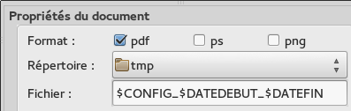

Configurer le document

Format : Format du document produit. 3 formats proposés : pdf, png, ps.
Répertoire : Le répertoire dans lequel sera écrit le fichier produit, ainsi que les fichiers exportés.
Fichier :
Le nom du fichier produit.
Noter la possibilité d'utiliser des macros dans le nom des fichiers (voir info-bulle).
Attention : ces 3 paramètres ne seront pas utilisés par vista si l'option -o, --output est utilisée en ligne de commande (cf § Vista en ligne de commande).